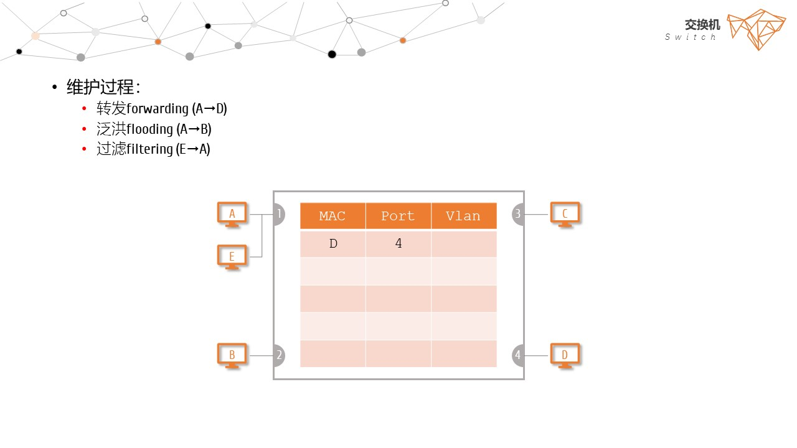

交换机自学习 Self-learning
- 交换机通过维护一个MAC地址表/转发表来实现链路层数据帧的通信
- 收到帧后，在MAC地址表中查找帧的目的MAC地址对应的端口，然后通过该端口转发出去
- 内容
- 接收数据帧的源地址和进入的端口号，所在vlan及有效时间
- 容量
- MAC表的大小
- 1K、2k、4k
- 维护过程
- 转发 forwarding (A → D)
- 泛洪 flooding (A → B)
- 过滤 filtering (E → A)
- 详细过程
- 登记
查找表中是否有与接收帧的源MAC地址匹配的项目
如果有，则更新
如果没有，则增加
- 转发
是否是广播帧：
如果是，全端口转发
如果不是，则查找表中是否有与接收帧的目的MAC地址匹配的项目：
1 如果没有，则泛洪flooding到其他所有端口上
2 如果有，则比较进入的端口与登记的端口：
2.1 如果不同，则按照登记的端口转发 forwarding
2.2 如果相同，表明是同一侧的主机，不需要转发，丢弃 disregarding /过滤 filtering 该帧
- 常用命令
- show mac-address-table：查看交换机的MAC表
- clear mac-address-table：清除交换机的MAC表





Homework
- 以太网交换机转发决策时使用的PDU地址是（ ）
A目的物理地址
B目的IP地址
C源物理地址
D源IP地址
- 使用脑图或其它工具，画出交换机自学习的流程图
- 用熟悉的算法设计一个数据结构，实现MAC表的维护过程
get( MacList, f.srcMac ) ? update( MacList, f.srcMac ) : add( MacList, f.srcMac )
// 参考数据结构
Typedef struct{
int desMac;
int srcMac;
int inPort;
int outport;
} Frame